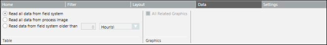

Data Tab
The Data tab allows you to specify the location from which the data is to be retrieved when you run the report. It also provides the option to define the Graphics filter.

If you have selected any of the options from the Table group box, the same option is also selected in the Condition Filter dialog box.
Any change in selection reflects in the Condition Filter dialog box as well.
However, if you change your selection in the Condition Filter dialog box, it does not reflect in the Table group box options of the Data tab.
Data Tab | |
Read all data from… | Description |
Field system | The objects data is always read from the field system which ensures that you always get the latest data. |
Process image | The objects data is always read from the cache which helps generating reports more quickly. |
Field system older than… | The age of the data entered is compared to the age of the data in the cache. If the data in the cache is older than the value entered, it is obtained from the field system; otherwise the data from the cache displays. |
Graphics Group Box
When All Related Graphics is selected, the related graphics and view ports of an object display in Run mode.
To view the graphics and view ports, you must assign the object as a Name filter to the graphics plot.